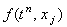
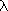
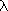

5. Неявная разностная схема с аппроксимацией производной по координате правой конечной разностью
|
5.1. Исследование устойчивости.
Исследуем устойчивость разностной схемы (5.4) с помощью спектрального метода. Для этого отбрасываем член , наличие которого, как известно, не оказывает влияния на устойчивость разностной схемы, и представляем решение в виде гармоники (3.7):  ,
и выражаем величину, обратную : ,
и выражаем величину, обратную :
1. Рассмотрим случай v < 0. Введём следующее обозначение: 2. Рассмотрим случай v > 0. Введём следующее обозначение:
 и радиусом q.
Сравнивая расположение этой окружности на комплексной плоскости с условием (5.7), получаем три
различных варианта (см. рисунок). Видно, что окружность, соответствующая величинам ,
при q < 1 находится внутри круга, соответствующего условию (5.7); при q > 1 - вне этого круга;
а при q = 1 совпадает с его границей. Таким образом, при положительном значении параметра v неявная разностная
схема (5.4) будет устойчива при выполнении следующего условия: и радиусом q.
Сравнивая расположение этой окружности на комплексной плоскости с условием (5.7), получаем три
различных варианта (см. рисунок). Видно, что окружность, соответствующая величинам ,
при q < 1 находится внутри круга, соответствующего условию (5.7); при q > 1 - вне этого круга;
а при q = 1 совпадает с его границей. Таким образом, при положительном значении параметра v неявная разностная
схема (5.4) будет устойчива при выполнении следующего условия:
Обобщая полученные результаты, сделаем вывод, что неявная разностная схема с аппроксимацией производной по координате правой конечной разностью (5.4) будет устойчива при выполнении одного из условий:
|